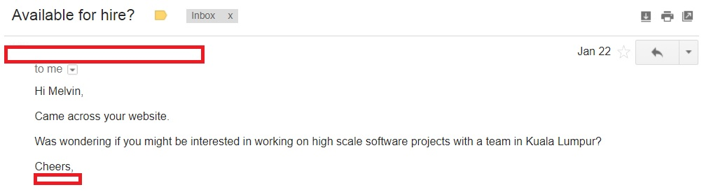

Last modified: Sat May 05 2018 14:56:50 GMT+0800 (Malay Peninsula Standard Time)
I Was Offered A Job In Malaysia
Looking for a job as an undergrad with zero (real) working experience was very difficult, especially when you were constantly competing with other people in the US. I do not limit myself to work in a fixed spot when I look for a job.
How It Started
I received an email from a person in Malaysia on January 2018 while I was travelling in US after I graduated. He sent me an email and the email is attached below.

The message I received is simple and contains minimal information. He reached me using my public email address that I put on the internet. I replied to his message and told him that I was available to hire.
We had a few emails back and forth but non of the email talks about the job position, type, or description. I told him that I will be back to Malaysia on late February or early March and agreed to meet him when I came back. He told me that he was away and will be back on March as well.
He Followed Up With Me
Fast forward to early March 2018, he sent me a follow up email and informed that he was back from his business trip. I provided him the date that I will be back to Malaysia and scheduled a date to meet up with him. I was pretty flexible and ended up meeting him on the next day I arrived my hometown. He gave me the location (office) that we were going to meet and his contact information (WhatsApp).
Pre-Meeting
A day before meeting him up, I texted him and informed that I arrived my hometown and reminded him that we will be meeting on the next day. He replied almost instantly. I asked if it is alright to meet him up in business casual outfit (any type of collar shirt including polo T-Shirt) and he told me that people in the office usually go in with casual outfit. The meeting that we set was at 3PM (I knew the timing was a little bit weird).
Meeting Day
I arrived on the location that he sent me about 30 minutes early. I walked around to take a look at the business complexes and offices around. Then, I went up to his office and rang the bell around 2:50PM. I was given a warm welcome by the person who contacted me. The office that I visited had no sign. It was just a unlabelled office building in a business complex. The area in the building was very similar to what we can see in a typical US environment: huge desks, micro kitchen with food in beverages stored in the fridge, etc. I was then offered some drinks of my choice. I ended up choosing one isotonic drink to keep myself hydrated. Also, I was offered two instead of one.
There was only one person initially. A few minutes later, he was then joined by two other colleagues. The discussion started with a simple introduction of myself. Then, I talked about where I went for my education and what I did over the time. The discussion was very interactive and very casual.
After that, I talked about the final year project (senior project) that I did in a group of four. We started to have more in depth discussion about the technology we used and the difficulty that I faced. Overall, there was not anything very difficult in the discussion. We switched the topics and talked about some of the easy and hard classes I had ever taken.
Next, they gave me a short introduction (approximately one minute) of what they do. It was a very brief information. I guess they are not planning to give away too much information. I was told that they work with financial institution (not a bank or brokerage as I listed some brokerage that I knew). Based on my visual observation (looking at diagrams on the area where they brain storm and discussion), they create software (actual software with API and database) for their client.
Then, he asked about what do I have in mind for my future plans. I told him two of my plans and we discussed on one of the plans extensively based on their opinion and experiences. We discussed and mentioned some of the cloned software company in Malaysia (people who copied technology from overseas). During the discussion, we had some small debate here and there. Overall, the experience was very fun and engaging. Of course, we exchanged some information.
We had two hours conversation. One of the colleague called it off as he had some stuff to take care off. I was sent off by the person who welcomed me initially (the person who sent me an email). He asked me to contact the person who contacted me for more update.
What Else?
I asked the person how the he managed to find me from the internet. I contributed to quite a few projects on the internet and wondered which searches I appeared under. I was told that he ran a few searches online to find Malaysia student that studies overseas (I have no clue how he did that as I never mention to people on the internet that I am from Malaysia). He listed a few criteria that he was looking for (I do not want to discuss it here).
Then, he told me that his target employee is Malaysian overseas graduates. He had been hiring for the last 6 years.
Four Days After We Met
I was in touch with the person who wanted to want to hire me. We discovered that we did not talk about the job detail during the two hours conversation. He invited me down to his office again to discuss about the job detail or we may have a Skype conference call to discuss the detail. We agreed to have a call via Skype days after I met them. However, I was having food poisoning a few days after I came back from meeting them. I had to push the Skype call back.
More Follow Up
Four of us were trying to schedule a Skype conference call after I recovered. I was told that two of them were having business trip in two different countries. Also, one of them were having food poisoning after he was back. At last we agreed on a date: exactly two weeks after I met them.
Skype Follow Up Conversation
We started with a lot of jokes (approximately 10-15 minutes) before we switched to a serious topic. Then, we discussed about the job detail. They told me that what I will be doing if I decided to join the team. They discussed the basics, expectations, and requirements. They asked if I had any idea about the salary that I was looking for in mind. I kindly asked them to make up a number that they think I was qualified for. I was told that the number will change a few times a year and there will be a few bonuses a year. Since they were really nice to me, I did not too worry about the amount that they were giving.
The amount were then sent to my email not a few hours after the conversation. I told the person that I will not negotiate the salary with him. I accepted the offer a few hours later within the same day as the offer that they gave was very good.
Technical Questions Asked During Interview?
People always study for their interview and memorize things here and there, but I did not. I told that I am not the right person if you looking for people that know about Algorithm and Data Structure as my curriculum was not focused in that and I did not want to memorize as there is Internet. So, if you really would like to know the questions asked, here are the only two "technical" questions that was asked.
- What is the characteristics of waterfall cycle?
- What is bubble sort?
I was unable to answer any of the questions and they were still perfectly fine with it! I told them that there is no point for me to memorize that while there are answers all around the internet.
What Is The Job About?
In short, it is a regular software development job and some fancy stuff here and there.
How Is The Job Environment?
There is a micro kitchen filled with food, snacks and drinks that you can grab. The job hours are very flexible, but people are usually there at around 11am. Everyone in the office will have a key and you are free to come in and leave anytime. MacOS environment preferably, but you are welcome to BringYOD, BuyYOD (and get reimbursed), or given a MacBook.
Things That They Never Ask For, But Usually They Will
Other than asking for what classes I took, they never really ask the for things that usually an employer will asked for. There was a very rare instances as most of the jobs ranked you based on the grades you received from the school instead of your actual experiences. Things that they never asked or mentioned:
- GPA, grade, or transcript
- Degree Certificate (proof that I completed my degree)
- Previous internship experience (I don't have any)
- CV or Resume (They probably don't care)
- Code challenge or coding LIVE
- Code on the whiteboard or discuss the code with them
Agreed To Work For the Company
I agreed to start to work in two weeks (mid April 2018) providing that I managed to get a room nearby the work area (the city that I will work at is 4 hours drive away from my hometown). Driving to work locally is not an option to me as I did not want to stuck in the traffic. Instead, I will take light rail or just walk. I was told and knew that the area where I will at is one of the most congested area in the city. At last, I pushed back my first day of work to May 2, 2018 as the place that I found was only available on May 1, 2018.
Work and Second Home
I rented a room in a high rise building (condominium) right next to my work place. The condominium comes with a lot of facilities that I do not think I will ever use it: four badminton courts, a half Olympic size pool, wading pool, children pool, spa pool, two convenience store, one cafe, one local restaurant, one tennis court, club house, squash, gym, sauna, BBQ, etc.
It is very convenience in on my opinion. When I go to work everyday, I will walk into a shopping mall. When I leave from work, I usually go to the department store and pick up some groceries on my way back.